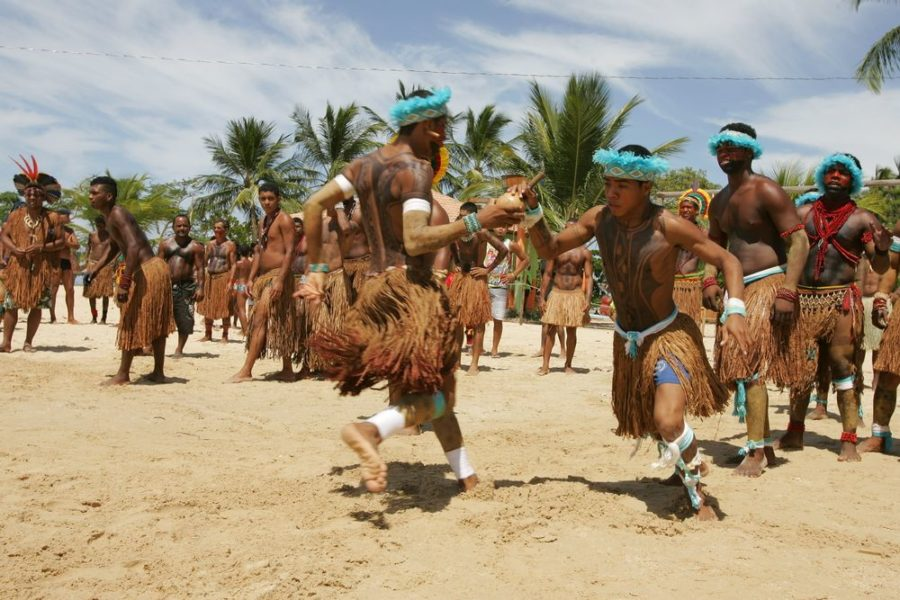
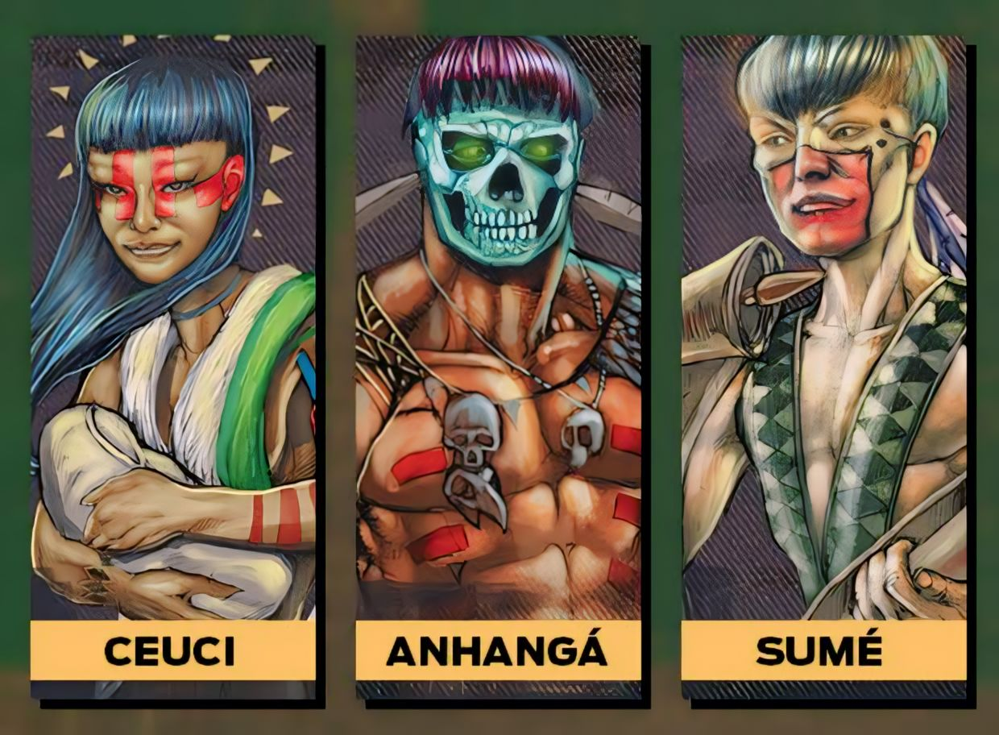

Por Que Dos Reis?
A cidade de Angra Dos Reis tem sua cultura turistica e predominante como religião o catolicismo que chegou junto com os portugueses, no centro da cidade predomina as construções e toda arquitetura católica.
Sendo descoberta em 1502 pelo nevegador explorador português Gonçalo Coelho no dia 06 de janeiro, sendo este o dia dos reis magos ela recebeu em seu nome como grande referência e também por sua quantidade de ilhas, montanhas, rios, florestas e o mar profundamente azul.
Uma das Maiores referências aos 3 reis magos está hoje firmada na praia do anil, as grandes estatuas foram idealizadas pelo Artista plastico Miguel Santeiro, sendo construidas na cidade mineira São João Del Rey e foram trazidas a Angra em 20 de outubro de 2012, Conheça sobre outras obras do autor no video abaixo.
Os Tamoios
Bem antes dos portugueses chegarem a angra esta terra já era habitada pelos indios tamoios que desfrutavam de toda beleza natural de Angra. Depois da chegada dos portugueses os tamoios buscavam liberta-se dos trabalhos em que eram forçados a fazer durante a colonização, lutavam também para preservar sua cultura e religião que com a predominancia do catolicismo acabou sendo esquecida aos poucos.
Suas Divindades
Ceuci Sendo a protetora das lavouras e das moradias indígenas, acabou sendo comparada pelos colonizadores católicos á Virgem Maria, por ter dado à luz de maneira milagrosa: seu filho, Jurupari – espírito guia e guardião –, nasceu do fruto da cucura-purumã (árvore que representa o bem e o mal na mitologia tupi)
Anhangá Inimigo de Tupã, Anhangá é o deus das regiões infernais, um espírito andarilho que pode tomar a forma de vários animais da selva. Apesar de ser considerado protetor dos animais e dos caçadores, é associado ao mal. Se aparece para alguém, é sinal de desgraça e mau agouro.
Sumé Responsável por manter as leis e as regras, Sumé também trouxe conhecimentos como o cozimento da mandioca e suas aplicações. Em virtude da desobediência dos indígenas, Sumé um dia partiu – saiu caminhando sobre o oceano Atlântico, prometendo voltar para disciplinar os índios.
A Colonização

A primeira colonização foi feita no continente, em 1530, por uma expedição a mando da Coroa de Portugal. Somente em 1556 chegaram os colonizadores, vindos dos Açores, que criaram um povoado ao se fixarem na enseada.
A primeira atividade econômica de Angra foi a cultura da cana-de-açúcar, além de servir de parada no trajeto entre Santos e Rio de Janeiro. Depois, exportando e importando os produtos de Minas Gerais e São Paulo, chegou a ser um dos maiores portos do Brasil
Na época do império, Angra conheceu um grande apogeu, durante o ciclo do café. Nos fins do século, porém, abriu-se à estrada de ferro São Paulo-Rio, terminando com as vantagens que Angra oferecia às comunicações entre as duas cidades.
Ares De Liberdade

Em 1888 com a abolição da escravatura acabou com a mão-de-obra essencial para a agricultura: o município parou. Só meio século depois, com o estabelecimento de uma estrada de ferro para Minas Gerais e a reativação do porto, Angra voltou a crescer. Mas somente na década de 60, com a instalação do Estaleiro da Verolme, a cidade volta a ter uma economia mais expressiva. Logo depois, foram instalados no município a Usina Nuclear de Furnas e o Terminal da Petrobrás.
Conclusão
Angra Dos Reis de hoje é um reflexo de seu passado,colonização, escravidão, catequisação e comércio tudo isso é possivel se ver caminhando no centro da cidade, histórias de seus povos e culturas que iram ecoar pela eternidade.